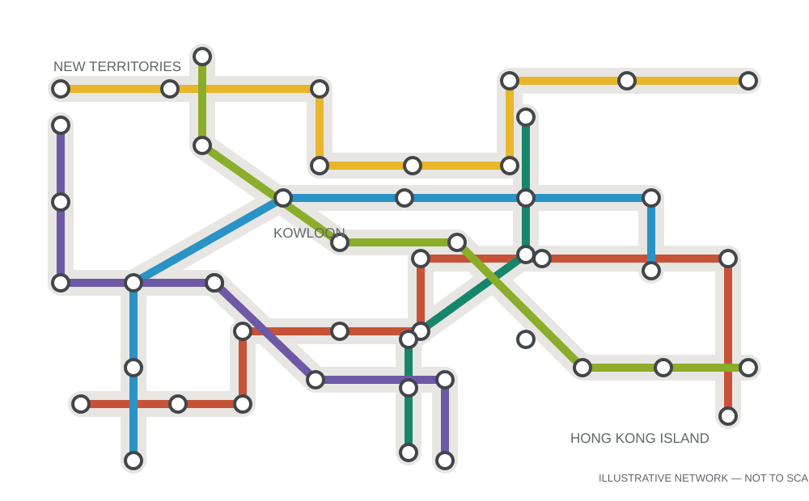

MTR (Mass Transit Railway) — Your Best Friend
The Hong Kong metro system is efficient, clean, and super convenient. Avoiding traffic entirely, even the rush hours are acceptable.

- Pay attention to the platform signs and staff; they help the system run smoothly.
- Crowd levels are shown on platform digital boards. Some interchange stations make it easy to walk to the other side of the platform to change lines without crossing the whole station.
- Trains run frequently from early morning until past midnight, connecting New Territories campuses to nightlife districts on Hong Kong Island in under an hour.